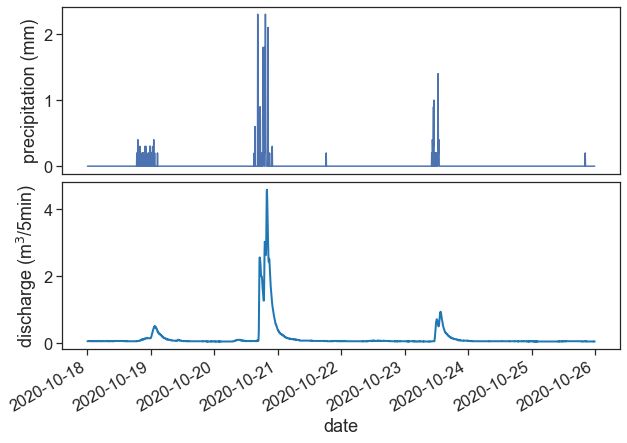
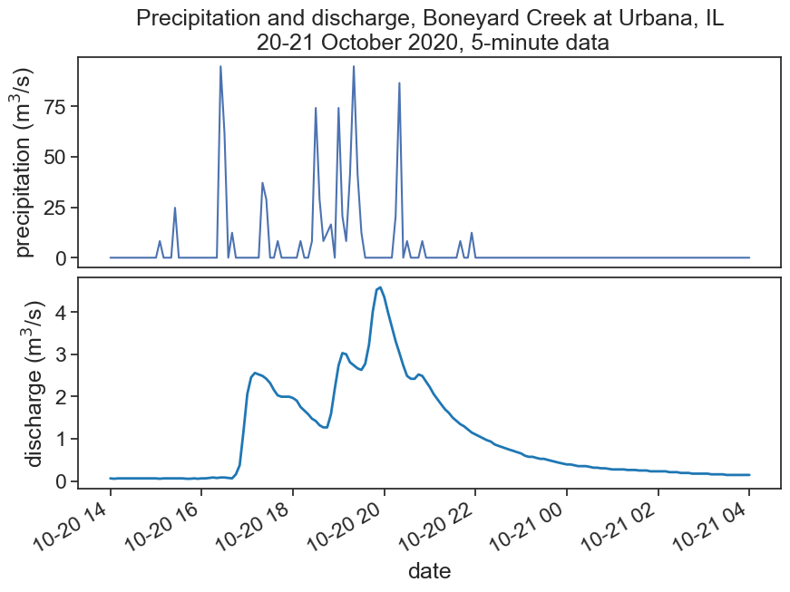
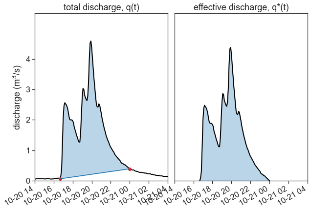

14 Exercises
Import relevant packages
Import streamflow data from USGS’s National Water Information System. We will be using data from Urbana, IL.
# Drainage area: 4.78 square miles
data_file = "USGS 03337100 BONEYARD CREEK AT LINCOLN AVE AT URBANA, IL.dat"
df_q_2020 = pd.read_csv(data_file,
header=31, # no headers needed, we'll do that later
delim_whitespace=True, # blank spaces separate between columns
na_values=["Bkw"] # substitute these values for missing (NaN) values
)
df_q_2020.columns = ['agency_cd', 'site_no','datetime','tz_cd','EDT','discharge','code'] # rename df columns with headers columns
df_q_2020['date_and_time'] = df_q_2020['datetime'] + ' ' + df_q_2020['tz_cd'] # combine date+time into datetime
df_q_2020['date_and_time'] = pd.to_datetime(df_q_2020['date_and_time']) # interpret datetime
df_q_2020 = df_q_2020.set_index('date_and_time') # make datetime the index
df_q_2020['discharge'] = df_q_2020['discharge'].astype(float)
df_q_2020['discharge'] = df_q_2020['discharge'] * 0.0283168 # convert cubic feet to m3
fig, ax = plt.subplots(figsize=(10,7))
ax.plot(df_q_2020['discharge'], '-o')
plt.gcf().autofmt_xdate()
ax.set(xlabel="date",
ylabel=r"discharge (m$^3$/5min)");
Import sub-hourly (5-min) rainfall data from NOAA’s Climate Reference Network Data website
data_file = "Champaign - IL.txt"
df_p_2020 = pd.read_csv(data_file,
header=None, # no headers needed, we'll do that later
delim_whitespace=True, # blank spaces separate between columns
na_values=["-99.000", "-9999.0"] # substitute these values for missing (NaN) values
)
headers = pd.read_csv("HEADERS_sub_hourly.txt", # load headers file
header=1, # skip the first [0] line
delim_whitespace=True
)
df_p_2020.columns = headers.columns # rename df columns with headers columns
# LST = local standard time
df_p_2020["LST_TIME"] = [f"{x:04d}" for x in df_p_2020["LST_TIME"]] # time needs padding of zeros, then convert to string
df_p_2020['LST_DATE'] = df_p_2020['LST_DATE'].astype(str) # convert date into string
df_p_2020['datetime'] = df_p_2020['LST_DATE'] + ' ' + df_p_2020['LST_TIME'] # combine date+time into datetime
df_p_2020['datetime'] = pd.to_datetime(df_p_2020['datetime']) # interpret datetime
df_p_2020 = df_p_2020.set_index('datetime') # make datetime the indexPlot rainfall and streamflow. Does this makes sense?
fig, (ax1, ax2) = plt.subplots(2, 1, figsize=(10,7))
fig.subplots_adjust(hspace=0.05)
start = "2020-10-18"
end = "2020-10-25"
ax1.plot(df_p_2020[start:end]['PRECIPITATION'])
ax2.plot(df_q_2020[start:end]['discharge'], color="tab:blue", lw=2)
ax1.set(xticks=[],
ylabel=r"precipitation (mm)")
ax2.set(xlabel="date",
ylabel=r"discharge (m$^3$/5min)")
plt.gcf().autofmt_xdate() # makes slated dates
Define smaller dataframes for p(t) and q(t), between the dates:
Don’t forget to convert the units to SI!
Calculate total rainfall P^* and total discharge Q^*, in m^3.
# Drainage area: 4.78 square miles
area = 4.78 / 0.00000038610 # squared miles to squared meters
start = "2020-10-20 14:00:00"
end = "2020-10-21 04:00:00"
df_p = df_p_2020.loc[start:end]['PRECIPITATION'].to_frame()
df_p_mm = df_p_2020.loc[start:end]['PRECIPITATION'].to_frame()
df_q = df_q_2020.loc[start:end]['discharge'].to_frame()
df_p['PRECIPITATION'] = df_p['PRECIPITATION'].values * area / 1000 # mm to m3 in the whole watershed
df_p['PRECIPITATION'] = df_p['PRECIPITATION'] / 60 / 5 # convert m3 per 5 min to m3/s
P = df_p['PRECIPITATION'].sum() * 60 * 5
Q = df_q['discharge'].sum() * 60 * 5
print("total precipitation during event: Pstar = {:.1e} m3".format(P.sum()))
print("total streamflow during event: Qstar = {:.1e} m3".format(Q.sum()))total precipitation during event: Pstar = 2.6e+05 m3
total streamflow during event: Qstar = 5.2e+04 m3Make another graph of p(t) and q(t), now with SI units.
fig, (ax1, ax2) = plt.subplots(2, 1, figsize=(10,7))
fig.subplots_adjust(hspace=0.05)
start = "2020-10-18"
end = "2020-10-25"
ax1.plot(df_p['PRECIPITATION'])
ax2.plot(df_q['discharge'], color="tab:blue", lw=2)
ax1.set(xticks=[],
ylabel=r"precipitation (m$^3$/s)",
title="Precipitation and discharge, Boneyard Creek at Urbana, IL\n 20-21 October 2020, 5-minute data")
ax2.set(xlabel="date",
ylabel=r"discharge (m$^3$/s)")
plt.gcf().autofmt_xdate() # makes slated dates
It’s time for base flow separation! Convert q(t) into q^*(t)
from matplotlib.dates import HourLocator, DateFormatter
import matplotlib.dates as mdates
import matplotlib.ticker as ticker
fig, (ax1, ax2) = plt.subplots(1, 2, figsize=(10,7))
fig.subplots_adjust(wspace=0.05)
ax1.plot(df_q['discharge'], color="black", lw=2)
point1 = pd.to_datetime("2020-10-20 16:40:00")
point2 = pd.to_datetime("2020-10-21 00:00:00")
two_points = df_q.loc[[point1, point2]]['discharge']
ax1.plot(two_points, 'o', color="tab:red")
new = pd.DataFrame(data=two_points, index=two_points.index)
df_linear = (new.resample("5min") #resample
.interpolate(method='time') #interpolate by time
)
ax1.plot(df_linear, color="tab:blue")
df_between_2_points = df_q.loc[df_linear.index]
ax1.fill_between(df_between_2_points.index, df_between_2_points['discharge'],
y2=df_linear['discharge'],
color="tab:blue", alpha=0.3)
qstar = df_q.loc[df_linear.index]['discharge'] - df_linear['discharge']
Qstar = qstar.sum() * 60 * 5
ax2.plot(qstar, color="black", lw=2)
ax2.fill_between(qstar.index, qstar,
y2=0.0,
color="tab:blue", alpha=0.3)
ax1.set(xlim=[df_q.index[0],
df_q.index[-1]],
ylabel=r"discharge (m$^3$/s)",
ylim=[0, 5.5],
yticks=[0,1,2,3,4],
title="total discharge, q(t)")
ax2.set(yticks=[],
ylim=[0, 5.5],
xlim=[df_q.index[0],
df_q.index[-1]],
title="effective discharge, q*(t)"
)
plt.gcf().autofmt_xdate() # makes slated dates
We can calculate p^* now, using
P^* = Q^*
One of the simplest methods is to multiply p(t) by a fixed constant (<1) to obtain p^*, so that the equation above holds true.
ratio = Qstar/ P
pstar = df_p['PRECIPITATION'] * ratio
Pstar = pstar.sum() * 5 * 60
print(f"Qstar / P = {ratio:.2f}")Qstar / P = 0.16Calculate now the centroid (t_pc) for effective precipitation p^* and centroid (t_{qc}) of effective discharge q^*. Calculate also the time of peak discharge (t_{pk}). Then, calculate the centroid lag (T_{LC}), the centroid lag-to-peak (T_{LPC}), and the time of concentration (T_c). Use the equations below:
T_{LPC} \simeq 0.60 \cdot T_c
Time of precipitation centroid:
t_{pc} = \frac{\displaystyle \sum_{i=1}^n p_i^* \cdot t_i}{P^*}
Time of streamflow centroid:
t_{qc} = \frac{\displaystyle \sum_{i=1}^n q_i^* \cdot t_i}{Q^*}
Centroid lag:
T_{LC} = t_{qc} - t_{pc}
Centroid lag-to-peak: T_{LPC} = t_{pk} - t_{pc}
Time of concentration: T_{LPC} \simeq 0.60 \cdot T_c
# pstar centroid
# time of the first (nonzero) rainfall data point
t0 = pstar[pstar != 0.0].index[0]
# time of the last (nonzero) rainfall data point
tf = pstar[pstar != 0.0].index[-1]
# duration of the rainfall event, in minutes
td = (tf-t0) / pd.Timedelta('1 min')
# make time array, add 2.5 minutes (half of dt)
time = np.arange(0, td+1, 5) + 2.5
# create pi array, only with relevant data (during rainfall duration)
pi = pstar.loc[(pstar.index >= t0) & (pstar.index <= tf)]
# convert from m3/5min to m3/s
pi = pi.values * 60 * 5
# time of precipitation centroid
t_pc = (pi * time).sum() / pi.sum()
# add initial time
t_pc = t0 + pd.Timedelta(minutes=t_pc)
t_pc
# qstar centroid
# time of the first (nonzero) discharge data point
t0 = qstar[qstar != 0.0].index[0]
# time of the last (nonzero) discharge data point
tf = qstar[pstar != 0.0].index[-1]
# duration of the discharge event, in minutes
td = (tf-t0) / pd.Timedelta('1 min')
# make time array, add 2.5 minutes (half of dt)
time = np.arange(0, td+1, 5) + 2.5
# create qi array, only with relevant data (during discharge duration)
qi = qstar.loc[(qstar.index >= t0) & (qstar.index <= tf)]
# convert from m3/5min to m3/s
qi = qi.values * 60 * 5
# time of discharge centroid
t_qc = (qi * time).sum() / qi.sum()
# add initial time
t_qc = t0 + pd.Timedelta(minutes=t_qc)
t_qc
# time of peak discharge
max_discharge = qstar.max()
t_pk = qstar[qstar == max_discharge].index[0]
# centroid lag
T_LC = t_qc - t_pc
# centroid lag-to-peak
T_LPC = t_pk - t_pc
# time of concentration
T_c = T_LPC / 0.60
print(f"T_LC = {T_LC}")
print(f"T_LPC = {T_LPC}")
print(f"T_c = {T_c}")T_LC = 0 days 00:53:03.186594
T_LPC = 0 days 01:22:59.857820
T_c = 0 days 02:18:19.763033333